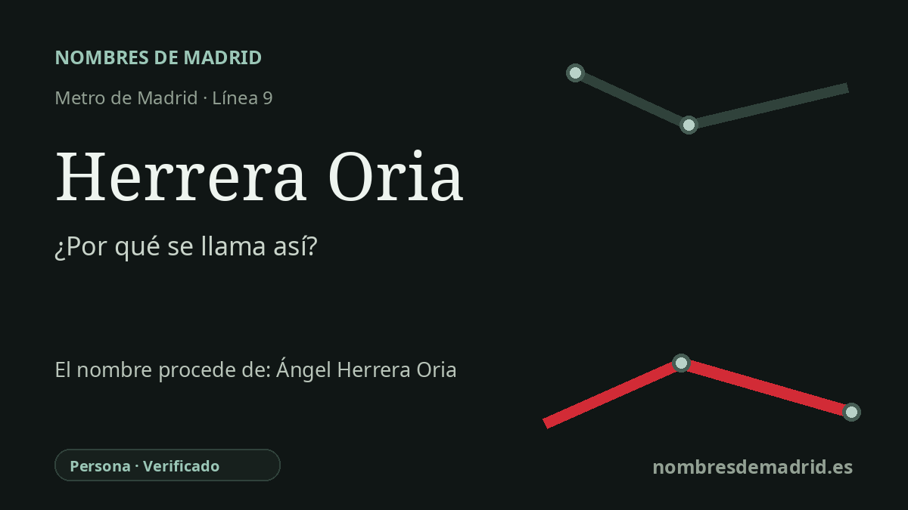

Publicado el · Investigación de Nombres de Madrid · Cómo verificamos cada origen · 7 fuentes consultadas
Respuesta rápida
La estación de Herrera Oria toma su nombre de Ángel Herrera Oria (1886-1968), periodista, jurista, dirigente católico, sacerdote, obispo de Málaga y cardenal español. El nombre se relaciona también con la cercana avenida del Cardenal Herrera Oria.
La historia del nombre
El nombre Herrera Oria remite a Ángel Herrera Oria, no a un antiguo pueblo ni a un rasgo del paisaje. La Comunidad de Madrid ha descrito expresamente a Ángel Herrera Oria como la figura que da nombre a la estación de Metro, y en 2023 instaló en ella paneles biográficos sobre su vida. El entorno urbano confirma esa lectura: uno de los accesos de la estación está junto a la avenida del Cardenal Herrera Oria, la vía madrileña que conserva su título eclesiástico y sus apellidos.
Ángel Herrera Oria nació en Santander el 19 de diciembre de 1886 y murió en Madrid el 28 de julio de 1968. Se formó como jurista, ingresó en el cuerpo de Abogados del Estado y pronto se convirtió en uno de los principales organizadores del catolicismo seglar español de comienzos del siglo XX. La Real Academia de la Historia lo identifica como periodista, abogado y cardenal, y vincula su trayectoria pública con la Asociación Católica de Propagandistas, Acción Católica y la diócesis de Málaga.
Su labor laical más conocida estuvo en el periodismo y la educación. Herrera Oria dirigió El Debate entre 1911 y 1933 y lo impulsó como un gran diario católico. También fundó en 1926 la Escuela de Periodismo de El Debate y promovió instituciones educativas y sociales como el CEU y el Instituto Social León XIII.
Su biografía dio después un giro poco habitual. En los años treinta dejó buena parte de su actividad pública seglar para formarse como sacerdote en Suiza y fue ordenado el 28 de julio de 1940. En 1947 fue nombrado obispo de Málaga, donde las fuentes destacan de forma constante su obra social y educativa, especialmente las escuelas-capilla rurales y las iniciativas de vivienda; en 1965 el papa Pablo VI lo creó cardenal.
La estación de Metro se inauguró el 3 de junio de 1983 como cabecera norte de un tramo inicialmente inconexo de la línea 9b entre Herrera Oria y Plaza de Castilla. El 24 de febrero de 1986 quedó integrada en la línea 9 continua. No se ha encontrado un nombre anterior de la estación: parece haber usado Herrera Oria desde su apertura, mientras que la memoria viaria más antigua de la zona pervive en la denominación popular de la avenida como carretera de la Playa.